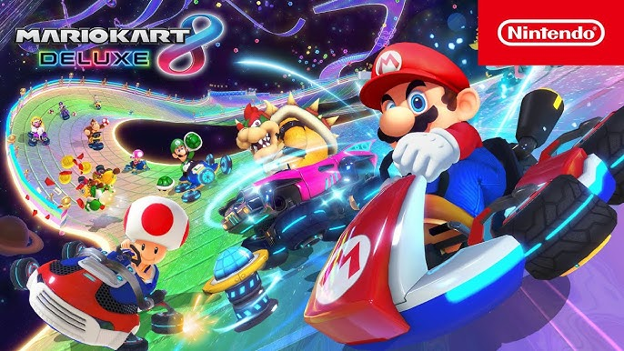

- Sports Sims: Traditional team sports strictly replicating real-world rules, rosters, and player statistics.
- Arcade Racing: Driving games that throw realistic physics out the window in favor of absurd speeds, drifting, and often weapon pick-ups.

